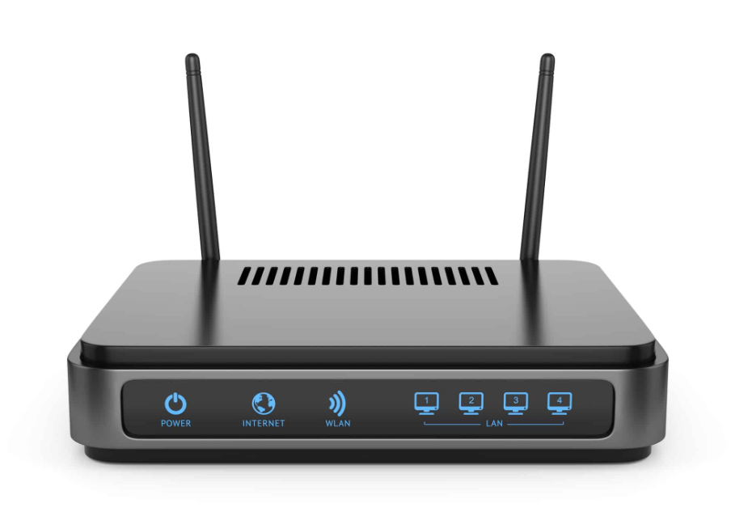

Profil Mahasiswa

Nama: Vikry Achmad Sonjaya Kusumah
NIM: 607012400001
Kelas: 48-02
Matakuliah: Jaringan Komputer
Perangkat Jaringan Router
Pengertian Router
router adalah perangkat yang berfungsi untuk mentransmisikan paket data dari jaringan internet ke perangkat lain melalui proses routing. Proses routing sendiri merupakan proses meneruskan paket jaringan satu dengan yang lainnya. router adalah perangkat yang menghubungkan dua atau lebih jaringan atau sub-jaringan.
Fungsi Router
Router memiliki dua fungsi utama, yaitu mengelola lalu lintas antar jaringan dan membagikan koneksi internet ke beberapa perangkat lain.
Jenis Jenis Router
Router Kabel (Wired Router)
Router ini menghubungkan perangkat ke internet menggunakan kabel Ethernet. Dengan kabel, koneksi internet cenderung lebih stabil dan cepat.
Router Nirkabel (Wireless Router)
Router ini memungkinkan perangkat terhubung ke internet tanpa kabel dengan menggunakan sinyal Wi-Fi.
Router Inti (Core Router)
Router ini digunakan dalam infrastruktur jaringan yang besar untuk mengarahkan data dengan sangat cepat dan efisien.
Router Tepi (Edge Router)
Router ini terletak di ujung jaringan dan berfungsi sebagai penghubung antara jaringan internal dan jaringan eksternal.
SOHO Router
Router ini dirancang untuk memenuhi kebutuhan jaringan di rumah atau kantor kecil.
Enterprise Router
Router ini digunakan oleh perusahaan besar untuk mengelola jaringan yang kompleks dan memiliki kapasitas tinggi.
Router Seluler (Mobile Router)
Router ini dapat mengakses internet melalui jaringan seluler dan berbagi koneksi tersebut dengan beberapa perangkat.
VPN Router
Router ini dilengkapi dengan kemampuan VPN yang mengenkripsi lalu lintas data sehingga lebih aman.
Sumber Artikel
Lampiran File Tutorial
File langkah-langkah membuat web hosting dapat diakses dibawah ini:
Download PDF